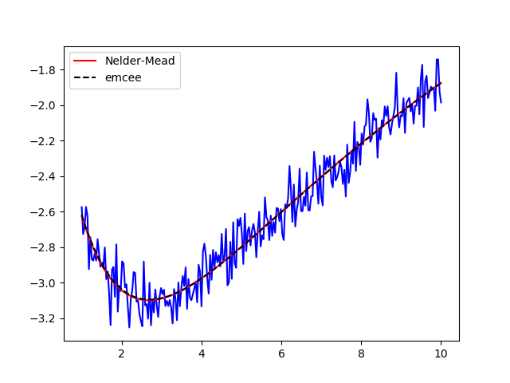

Note
Click here to download the full example code
doc_fitting_emcee.py¶


- 
Out:
[[Variables]]
a1: 2.98623689 +/- 0.15010519 (5.03%) (init = 4)
a2: -4.33525597 +/- 0.11765819 (2.71%) (init = 4)
t1: 1.30993186 +/- 0.13449652 (10.27%) (init = 3)
t2: 11.8099125 +/- 0.47172590 (3.99%) (init = 3)
[[Correlations]] (unreported correlations are < 0.500)
C(a2, t2) = 0.988
C(a2, t1) = -0.928
C(t1, t2) = -0.885
C(a1, t1) = -0.609
The chain is shorter than 50 times the integrated autocorrelation time for 5 parameter(s). Use this estimate with caution and run a longer chain!
N/50 = 20;
tau: [42.56866178 46.31856223 46.34907107 46.97295144 38.29346367]
median of posterior probability distribution
--------------------------------------------
[[Variables]]
a1: 2.99273590 +/- 0.14795943 (4.94%) (init = 2.986237)
a2: -4.34510429 +/- 0.12509158 (2.88%) (init = -4.335256)
t1: 1.32575254 +/- 0.14478422 (10.92%) (init = 1.309932)
t2: 11.7909996 +/- 0.48119246 (4.08%) (init = 11.80991)
__lnsigma: -2.32735355 +/- 0.04399601 (1.89%) (init = -2.302585)
[[Correlations]] (unreported correlations are < 0.100)
C(a2, t2) = 0.979
C(a2, t1) = -0.939
C(t1, t2) = -0.896
C(a1, t1) = -0.498
C(a1, a2) = 0.206
C(a1, t2) = 0.175
Maximum likelihood Estimation
-----------------------------
<Parameter 'a1', value=2.9906874726524726, bounds=[-inf:inf]>
<Parameter 'a2', value=-4.35008975094292, bounds=[-inf:inf]>
<Parameter 't1', value=1.322477365772526, bounds=[-inf:inf]>
<Parameter 't2', value=11.764400319132873, bounds=[-inf:inf]>
1 sigma spread 0.14501906108658946
2 sigma spread 0.2985828649641594
##
import warnings
warnings.filterwarnings("ignore")
##
# <examples/doc_fitting_emcee.py>
import numpy as np
import lmfit
try:
import matplotlib.pyplot as plt
HASPYLAB = True
except ImportError:
HASPYLAB = False
try:
import corner
HASCORNER = True
except ImportError:
HASCORNER = False
x = np.linspace(1, 10, 250)
np.random.seed(0)
y = (3.0*np.exp(-x/2) - 5.0*np.exp(-(x-0.1) / 10.) +
0.1*np.random.randn(x.size))
if HASPYLAB:
plt.plot(x, y, 'b')
plt.show()
p = lmfit.Parameters()
p.add_many(('a1', 4), ('a2', 4), ('t1', 3), ('t2', 3., True))
def residual(p):
v = p.valuesdict()
return v['a1']*np.exp(-x/v['t1']) + v['a2']*np.exp(-(x-0.1) / v['t2']) - y
mi = lmfit.minimize(residual, p, method='nelder', nan_policy='omit')
lmfit.printfuncs.report_fit(mi.params, min_correl=0.5)
if HASPYLAB:
plt.figure()
plt.plot(x, y, 'b')
plt.plot(x, residual(mi.params) + y, 'r', label='best fit')
plt.legend(loc='best')
plt.show()
# Place bounds on the ln(sigma) parameter that emcee will automatically add
# to estimate the true uncertainty in the data since is_weighted=False
mi.params.add('__lnsigma', value=np.log(0.1), min=np.log(0.001), max=np.log(2))
res = lmfit.minimize(residual, method='emcee', nan_policy='omit', burn=300,
steps=1000, thin=20, params=mi.params, is_weighted=False,
progress=False)
if HASPYLAB and HASCORNER:
emcee_corner = corner.corner(res.flatchain, labels=res.var_names,
truths=list(res.params.valuesdict().values()))
plt.show()
if HASPYLAB:
plt.plot(res.acceptance_fraction)
plt.xlabel('walker')
plt.ylabel('acceptance fraction')
plt.show()
if hasattr(res, "acor"):
print("Autocorrelation time for the parameters:")
print("----------------------------------------")
for i, par in enumerate(p):
print(par, res.acor[i])
print("\nmedian of posterior probability distribution")
print('--------------------------------------------')
lmfit.report_fit(res.params)
# find the maximum likelihood solution
highest_prob = np.argmax(res.lnprob)
hp_loc = np.unravel_index(highest_prob, res.lnprob.shape)
mle_soln = res.chain[hp_loc]
for i, par in enumerate(p):
p[par].value = mle_soln[i]
print("\nMaximum likelihood Estimation")
print('-----------------------------')
for _, vals in p.items():
print(vals)
if HASPYLAB:
plt.figure()
plt.plot(x, y, 'b')
plt.plot(x, residual(mi.params) + y, 'r', label='Nelder-Mead')
plt.plot(x, residual(res.params) + y, 'k--', label='emcee')
plt.legend()
plt.show()
quantiles = np.percentile(res.flatchain['t1'], [2.28, 15.9, 50, 84.2, 97.7])
print("1 sigma spread", 0.5 * (quantiles[3] - quantiles[1]))
print("2 sigma spread", 0.5 * (quantiles[4] - quantiles[0]))
# <end of examples/doc_fitting_emcee.py>
Total running time of the script: ( 0 minutes 11.120 seconds)